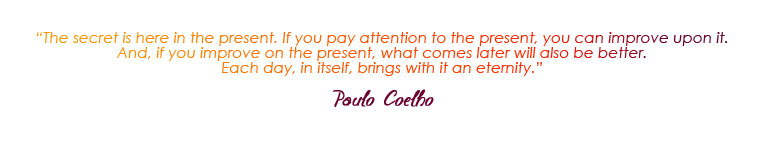

Two quotations sum up the essence of my project :

These two quotations reflect my current thinking and the turn my life took in 2014.
Just like everyone else, I was caught up in my daily routine until events in my personal life made me realise that I wanted to make my life and actions more meaningful and I could do this through the creation of an association for deprived children in South-East Asia. I care deeply about children.
In order to develop this project I did a lot of research, consulting documents, books and articles and speaking with people in my personal and professional life who all share the same goal: helping children.
I first shared the idea for this project and spoke about it at length with my adopted children Lucas and Anouk, my family and close friends. I also spoke with my professional contacts: Sylvain Bianchini, my current boss at Novalto, and Olivier Brechard, ex director of the organisation W.I.S.E., and also with Christine de Fonanet, Christophe Landais and Jean Dallais who are all active in voluntary organisations. All of them took the time to listen, encourage and advise me and most importantly they have all lent me their support.
The priority of this project is to develop a plan for the education and schooling of children who have not had access to learning. With education, these children can become indpendent and develop a personal and professional future within their own country and environment, without leaving their families. I was inspired by the educational project for children in Uruguay “La Scola Nueva”, Learning for Learning.
In January 2015, I travelled to Vietnam to meet 4 associations. I chose recognised associations who help deprived children. Two of the four associations in particular grabbed my attention because they started out with nothing and, although they are small scale international associations, they have managed to run themselves very efficiently. In Spring, I will continue my travels to Thailand, Burma, Cambodia and Laos to meet with French and other foreign associations who have been working there for many years.
To complete my course of action, in January 2016, I have planned to go to Vietnam or Cambodia, where my children were born, to do volunteer work within these associations. I plan to stay 6 months or more. It will be a valuable experience for me on a human and professional level where I will learn more about the economic and social aspects and the nature of my project. After this period of volunteering, I will settle in Asia in order to implement my project:
Creating my association OKOS > One Kid One Smile
I created this website “OKOS” in order to share and exchange and gather ideas and/or suggestions from others who are interested in my actions. If you are interested, please write to me here:gregoire@onekidonesmile.org
At the end of 2015, I will be setting up my own “Donation fund” which will be at the core of the beginning of my project and then I will search for donations from individuals and companies.
I also have another goal, complementary to my current project: I would like to set up a responsable and supportive social and environmental “ecosystem”. But first things first, for the moment I am totally committed to my project to help deprived children.
I would like to thank the following people: my two children Lucas and Anouk,
Lina Vial, Aissatel Amet, Sylvain Bianchini, Olivier Brechard, Christophe Landais, Jean Dallais, Hien Thuc Ngo, Varaporn Noothong, Antoinette Cole, Michel Vielledent et Véronique Surget, Caroline Gichuki, Beth Schaeffer, Christine de Fontanet, Mei Szabo, Maggi, Jamila El Yousfi, Philippe Remoissenet, Emmanuel Breuil, Thomas Chavane, Blandine de Mareuil, Anahit Dasseux, Anne Yanic, Jean Michel Buffet, Benoit Desveaux, Mr. and Mrs. des Pallieres, Dominique Lapierre. |